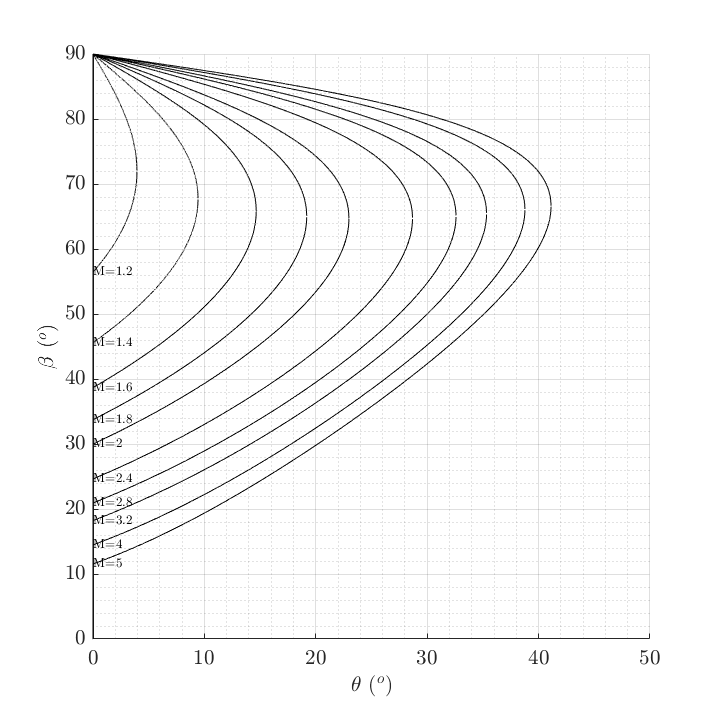
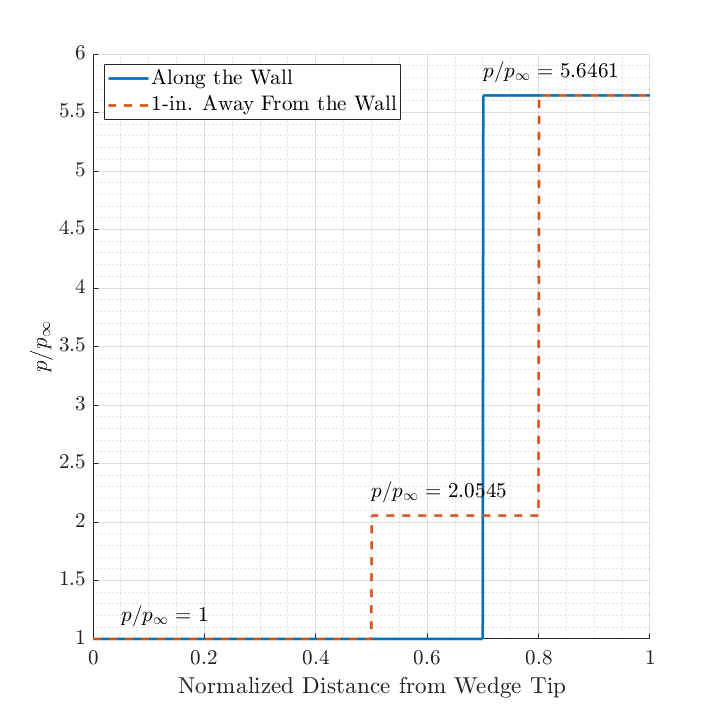

Contents
Problem 1
close all
clear;clc
gamma = 1.4;
figure(1)
hold on
theta = linspace(0,60,120001);
M = [1, 1.2, 1.4, 1.6, 1.8, 2, 2.4, 2.8, 3.2, 4, 5];
bw = zeros(size(theta));
bs = zeros(size(theta));
for i = 1:length(M)
[bw,bs] = TBM_get_beta(M(i),deg2rad(theta),gamma);
theta_temp = theta;
theta_temp(imag(bw)~=0) = [];
bw(imag(bw)~=0) = [];
bs(imag(bs)~=0) = [];
bw = rad2deg(bw);
bs = rad2deg(bs);
plot(theta_temp,bw,'Color','k')
plot(theta_temp,bs,'Color','k')
if length(bw) >= 2
text(theta_temp(2),bw(2),strcat('M=',num2str(M(i))),...
'FontSize',10)
end
end
hold off
ylim([0,90])
set(gca,'FontSize',16)
grid(gca,'minor')
grid on
xlabel('$\theta$ (${}^o$)','FontSize',16)
ylabel('$\beta$ (${}^o$)' ,'FontSize',16)
latexify

Problem 2
close all
clear;clc
theta = deg2rad(10);
M = 3;
gamma = 1.4;
beta = TBM_get_beta(M,theta,gamma);
p_ratio_1 = TBM_get_pres(M,beta,gamma);
M1n = M * sin(beta);
M2n = sqrt( (M1n^2 + 2/(gamma-1)) / (2*gamma/(gamma-1)*M1n^2-1) );
M2 = M2n / sin(beta-theta);
beta2 = TBM_get_beta(M2,theta,gamma);
p_ratio_2 = TBM_get_pres(M,beta2,gamma);
p_ratio_tot = p_ratio_1 * p_ratio_2;
figure(2)
hold on
x_axis = linspace(0,1,1000);
y_wall = ones(size(x_axis));
y_wall(x_axis> 0.7) = p_ratio_tot;
y_inch = ones(size(x_axis));
y_inch(x_axis>0.5) = p_ratio_1;
y_inch(x_axis>0.8) = p_ratio_tot;
plot(x_axis,y_wall,'LineWidth',2)
plot(x_axis,y_inch,'--','LineWidth',2)
text( 0.05, 1.2, '$p/p_{\infty} = 1$', 'FontSize',16)
text(0.5, p_ratio_1+0.2, ...
strcat('$p/p_{\infty} = ',num2str(p_ratio_1),'$'), 'FontSize',16)
text(0.7, p_ratio_tot+0.2, ...
strcat('$p/p_{\infty} = ',num2str(p_ratio_tot),'$'), 'FontSize',16)
hold off
xlabel('Normalized Distance from Wedge Tip','FontSize',16)
ylabel('$p/p_{\infty}$','FontSize',16)
set(gca,'FontSize',16)
grid(gca,'minor')
grid on
legend('Along the Wall','1-in. Away From the Wall',...
'FontSize',16,'Location','northwest')
latexify

Problem 3
close all
clear;clc
M = 2;
gamma = 1.4;
T = 277.8;
theta = deg2rad(10);
beta = TBM_get_beta(M,theta,gamma);
sin_ang = beta-theta;
hypo = 1/sin(beta);
dist = 1/tan(beta);
d2_d1 = hypo * sin(sin_ang);
disp(['The lower bend is ' num2str(dist) '*D1 to the right of the top bend.'])
disp(['D2 = ' num2str(d2_d1) '*D1'])
The lower bend is 1.2212*D1 to the right of the top bend.
D2 = 0.77276*D1
Problem 4
close all
clear;clc
M1 = 2.4;
M2 = 1.6;
gamma = 1.4;
theta = deg2rad(15);
alpha = deg2rad(8.3315);
theta1 = theta - alpha;
theta2 = alpha;
beta1 = TBM_get_beta(M1,theta1,gamma);
beta2 = TBM_get_beta(M2,theta2,gamma);
p3 = TBM_get_pres(M1,beta1,gamma);
p4 = TBM_get_pres(M2,beta2,gamma);
disp(['alpha = ' num2str(rad2deg(alpha)) ' degrees (clockwise)'])
alpha = 8.3315 degrees (clockwise)
Problem 5
close all
clear;clc
M1 = 3;
gamma = 1.4;
M4 = 0.5;
theta = deg2rad(10);
p1 = 30;
p0_1 = p1 * (1+(gamma-1)/2*M1^2)^(gamma/(gamma-1));
beta1 = TBM_get_beta(M1,theta,gamma);
pres1 = TBM_get_pres(M1,beta1,gamma);
M1n = M1 * sin(beta1);
M2n = sqrt( (M1n^2 + 2/(gamma-1)) / (2*gamma/(gamma-1)*M1n^2-1) );
M2 = M2n / sin(beta1-theta);
beta2 = TBM_get_beta(M2,theta,gamma);
pres2 = TBM_get_pres(M2,beta2,gamma);
M2n = M2 * sin(beta2);
M3n = sqrt( (M2n^2 + 2/(gamma-1)) / (2*gamma/(gamma-1)*M2n^2-1) );
M3 = M3n / sin(beta2-theta);
M4_comp = sqrt( (M3^2 + 2/(gamma-1)) / (2*gamma/(gamma-1)*M3^2-1) );
pres3 = 1 + 2*gamma/(gamma+1)*(M3^2-1);
p4_comp = p1 * pres1*pres2*pres3;
p0_4_comp = p4_comp * (1+(gamma-1)/2*M4_comp^2)^(gamma/(gamma-1));
eff_comp = p0_4_comp / p0_1;
disp(['Double compression corner efficiency:' newline ...
' ' num2str(eff_comp)])
M4_norm = sqrt (( M1^2 + 2/(gamma-1) ) / ( 2*gamma/(gamma-1)*M1^2 - 1 ));
pres4 = 1 + 2*gamma/(gamma+1)*(M1^2-1);
p4_norm = p1 * pres4;
p0_4_norm = p4_norm * (1+(gamma-1)/2*M4_norm^2)^(gamma/(gamma-1));
eff_norm = p0_4_norm / p0_1;
disp(['Normal shock inlet efficiency:' newline ...
' ' num2str(eff_norm)])
disp('The double compression corner inlet is more efficient.')
Double compression corner efficiency:
0.63786
Normal shock inlet efficiency:
0.32834
The double compression corner inlet is more efficient.